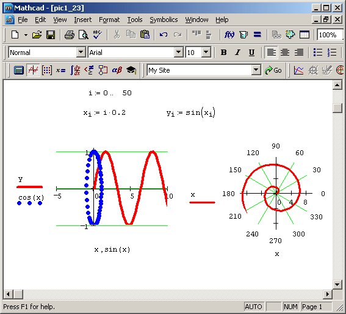

|

Mathcad is computer software primarily intended for the verification, validation, documentation and re-use of engineering calculations. First introduced in 1986 on DOS, it was the first to introduce live editing of typeset mathematical notation, combined with its automatic computations.
Summary of capabilities:
The Mathcad interface allows users to combine a variety of different elements (mathematics, descriptive text, and supporting imagery) into the form of a worksheet, which is naturally readable. Because the mathematics are core to the program, the math is inherently live, dynamically recalculating as upstream values are altered. This allows for simple manipulation of input variables, assumptions, and expressions, which in turn update in real-time. The examples below serve to outline the scope of Mathcad’s capabilities, rather than to give specific details on the individual product functionality.
• Utilize numerous numeric functions, across examples such as statistics, data analysis, image processing, and signal processing
• Automatically manage units throughout the worksheet, preventing improper operations and performing automatic unit-reduction
• Solve systems of equations, such as ODEs and PDEs through the use of several methods
• Find roots of polynomials and functions
• Calculate and manipulate expressions symbolically, including within systems of equations
• Create parametric 2D and 3D plot types, as well as discrete data plots
• Leverage standard, readable mathematical expressions within embedded program constructs
• Perform vector and matrix operations, including eigenvalues and eigenvectors
• Perform curve fitting and regression analysis on experimental datasets
• Utilize statistical and Design of Experiments functions and plot types, and evaluate probability distributions
• Import from, and export to, other applications and file types, such as Microsoft Excel and MathML.
• Include references to other Mathcad worksheets to re-use common engineering methods
• Integrate with other engineering applications, such as CAD, FEM, BIM, and Simulation tools, to aid in product design, like Autocad, Ansys, Revit
Although Mathcad is mostly oriented to non-programming users, it is also used in more complex projects to visualize results of mathematical modeling by using distributed computing and coupling with programs written using more traditional languages such as C++.
|